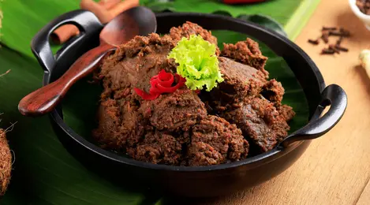
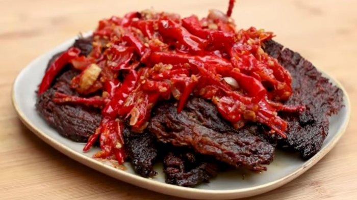

Rendang Dagiang
Rendang atau randang (Jawi: رندڠ) adalah masakan daging asli Indonesia yang berasal dari Minangkabau. Masakan ini dihasilkan dari proses memasak suhu rendah dalam waktu lama menggunakan aneka rempah-rempah dan santan. Proses memasaknya memakan waktu berjam-jam (biasanya sekitar empat jam) hingga yang tinggal hanyalah potongan daging berwarna hitam pekat dan dedak. Dalam suhu ruangan, rendang dapat bertahan hingga berminggu-minggu. Rendang yang dimasak dalam waktu yang lebih singkat dan santannya belum mengering disebut kalio, berwarna cokelat terang keemasan.
Dendeng Batokok
Resep dendeng biasanya menggunakan satu jenis daging saja, yaitu daging sapi. Namun dendeng dapat dibuat dari daging lainnya seperti kambing atau babi. Bisa juga dendeng dibuat dari hasil buruan seperti venison, elk, caribou, dan rusa. Saat ini, terdapat juga dendeng dari kalkun, burung onta, salem, buaya, dan tuna. Daging harus dikeringkan dengan cepat, untuk memperlambat pertumbuhan bakteri saat itu juga. Untuk melakukannya, daging dipotong tipis, atau ditekan sampai tipis.